Derivatives¶
This chapter contains more not-so-practical math than the trig and geometry chapter, but you may find it surprisingly fun. However, the math is not useless gibberish isolated from real life and there’s a practical example with a fun demonstration game at the end.
What is a derivative?¶
A difference means how much a value changes. For example, if the value of  is first 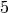 and then we change it to , changes by . Here
is the Greek delta letter, so if someone’s code has a variable named
is first 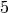 and then we change it to , changes by . Here
is the Greek delta letter, so if someone’s code has a variable named
deltax it means this.
Let’s draw a graph of something like  :
:

For example, at 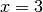 we know that 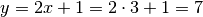.
Let’s calculate the slope of this line:

The bigger the slope, the faster the line goes up, so the slope describes the “growing speed” or “changing speed”. I used the points 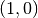 and 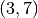 when calculating the slope, but you should get the same slope with any pair of points chosen from the line because the height grows at the same speed everywhere.
The derivative 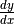 is also a “changing speed”, but  instead of means that the changes we use for calculating derivatives
are infinitely tiny. You might be worried about calculating the
because if then we’re dividing by zero, but
instead of means that the changes we use for calculating derivatives
are infinitely tiny. You might be worried about calculating the
because if then we’re dividing by zero, but  is not
zero; it’s just really, really small.
is not
zero; it’s just really, really small.
If the graph is not a straight line, we get different 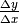 ratios depending on which points we choose for calculating 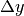 and . The derivative is not the same number everywhere, but let’s try to figure out how to calculate it anyway.
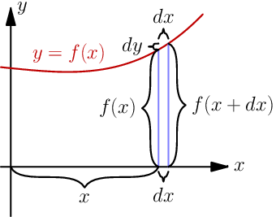
Let’s look at 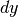 and of the graph 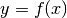, where  can be any
function that has a derivative. Most functions you’ll come across have a
derivative; if you want to know more, click here.
can be any
function that has a derivative. Most functions you’ll come across have a
derivative; if you want to know more, click here.
The image at right seems to say that 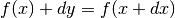. Let’s try to solve :
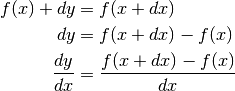
Most mathematicians don’t like the above formula because is a
“small number” and it isn’t really clear how it behaves in different
situations. Here’s a better definition:
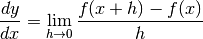
The  thing means that we take the limit as
thing means that we take the limit as  approaches 0. It’s
essentially same as our thing, but more explicit and better defined in
some corner cases.
approaches 0. It’s
essentially same as our thing, but more explicit and better defined in
some corner cases.
First Example¶

The graph 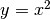 is curvy. Let’s find its derivative by plugging in 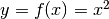 to the definition we ended up with. If we just try to evaluate it at we get so you might think that we need to evaluate it at e.g. 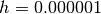, but we don’t! Have a look:

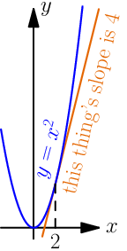
I think this is cool. We started with a really horribly complicated-looking thing, then we made it look even more complicated but finally we arrived at just . What’s more, the is not just a random value we got out of a spooky calculation; for example, at 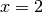 the derivative is 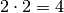, so if we draw a straight line that barely touches at that point its slope will also be 4 like in the image at right.
You can also find the derivative of the  example we looked at earlier,
and turns out that 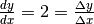. It makes sense
because derivatives are just like slopes but they also work with curvy things,
and there’s no difference between a slope and a derivative of a straight line.
example we looked at earlier,
and turns out that 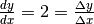. It makes sense
because derivatives are just like slopes but they also work with curvy things,
and there’s no difference between a slope and a derivative of a straight line.
Note
The derivative can be also written as 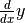,
although it doesn’t make much sense because doesn’t mean times  .
.
Another common style is to put a single quote after a function name, like 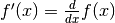.
Faster!¶
Finding the derivative was kind of complicated and really slow. With these handy-dandy rules, you can get from in a matter of seconds. Most of these rules are easy to prove so there is no magic involved.
I have listed many rules here, but don’t panic; there’s no need to memorize
them. As before and  can be any functions as long as they have a
derivative (e.g. 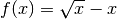 and 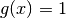), and
can be any functions as long as they have a
derivative (e.g. 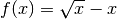 and 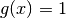), and  can be any constant
like or but not e.g. because that depends on the value of .
can be any constant
like or but not e.g. because that depends on the value of .

With these formulas you can find derivatives of long and scary functions really easily. For example:
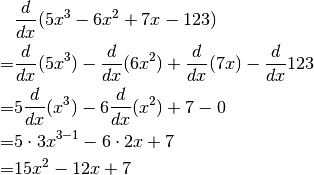
Of course, there’s no need to write down all of these steps.
Note that if you have something like 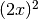 as opposed to you
need to use the  rule. In this example,
you would plug in 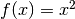 and
rule. In this example,
you would plug in 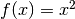 and  to get this:
to get this:
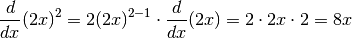
In some cases it’s also possible to first open up something like the 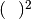:
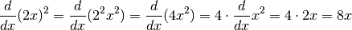
You can also use a nice symbolic calculation library, like Python’s sympy (can be installed with pip):
>>> from sympy import *
>>> init_printing(use_unicode=True)
>>> x = Symbol('x')
>>> diff(5 * x**3 - 6 * x**2 + 7*x - 123)
2
15⋅x - 12⋅x + 7
>>> diff((2*x)**2)
8⋅x
>>>
Here “diff” is short for “differenciate”, and it means finding a derivative.
Libraries like sympy are also useful for doing long and messy calculations like the one we did above:
>>> def f(x):
... return x**2
...
>>> h = Symbol('h')
>>> expand((f(x+h)-f(x))/h)
h + 2⋅x
>>>
Example: Smooth Jumps¶
Let’s say you’re making a game where a player can jump over something. If the player moves right at a steady speed, which of these jumps looks best?
The answer is obvious – the rightmost jump looks best. It’s time to figure out how to make games with jumps like that.
Let’s say that  is time and is the height of our player, so we get this
graph:
is time and is the height of our player, so we get this
graph:

This looks like a parabola, and the equation of a parabola is  where
where  ,
,  and are constants. The changing speed of height is velocity
:
and are constants. The changing speed of height is velocity
:
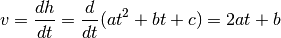
On the other hand, the changing speed of velocity is the acceleration caused by
gravity. Let’s call that .
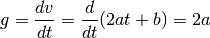
Note how the disappeared and we’re left with just the constant . This
makes sense because the gravity is always the same, no matter what time it is.
This Python program…
height = 0
velocity = 10
gravity = 2
while height >= 0:
print(' '*height + 'O')
height += velocity
velocity -= gravity
…prints this awesome parabola:
O
O
O
O
O
O
O
O
O
O
O
O
You can use similar code for doing jumps in games. Here’s a demo created with my canvaswrapper.js script. Click it and use arrow keys to move the ball.
Here's the code:
var screen = new CanvasWrapper('canvas1');
const GRAVITY = 1.5;
var player = {
x: screen.width/2, // centered
height: 0, // distance from bottom of screen to player's bottom
velocity: 0, // positive means up
velocityMax: 30, // velocity immediately after a jump
sidewayMovement: 0, // -1 is left, +1 right
sidewaySpeed: 10,
ballRadius: 30,
};
runRepeatedly(function() {
screen.fill('black');
screen.drawCircle(player.x, screen.height-player.height-player.ballRadius,
player.ballRadius, 'white');
player.x += player.sidewayMovement * player.sidewaySpeed;
player.height += player.velocity;
player.velocity -= GRAVITY;
if (player.height < 0) {
// player hits the ground
player.height = 0;
player.velocity = 0;
}
screen.getEvents().forEach(evt => {
if (evt.type == 'keydown') {
if (evt.key == 'ArrowLeft') {
player.sidewayMovement = -1;
} else if (evt.key == 'ArrowRight') {
player.sidewayMovement = 1;
} else if (evt.key == 'ArrowUp') {
player.velocity = player.velocityMax;
}
} else if (evt.type == 'keyup' && (
(evt.key == 'ArrowLeft' && player.sidewayMovement == -1) ||
(evt.key == 'ArrowRight' && player.sidewayMovement == 1))) {
// cancel the previous ArrowLeft or ArrowRight press
player.sidewayMovement = 0;
}
});
});